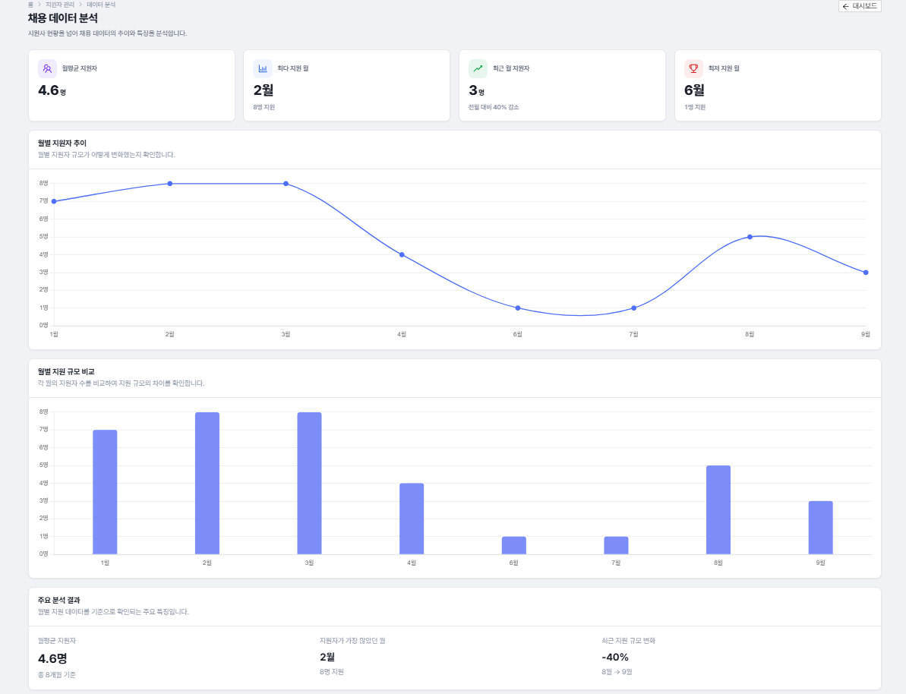

최다영
Backend-leaning Full Stack Developer
Developer

Skills
Backend
JavaSpring Boot
Spring SecurityJWT
RedisMyBatis
JPAOracle DB
MySQL
Frontend
ReactRedux Toolkit
redux-sagaThymeleaf
Ant Design
Data & Analytics
PythonDjango
PandasChart.js
Infra
AWS EC2Nginx
Let's EncryptGit / GitHub Actions
AI / API
OpenAI GPT APIRAG
Google Docs/Drive APIDiscord Webhook
PDFBoxSwagger
Project
V1
SBErp 전사적 자원관리 시스템 V1 (Spring + MyBatis 구조화)
기본 CRUD
Spring MVC + JSP + MyBatis + MySQL 기반 프로젝트·태스크 관리
권한 관리
Role 기반 접근 권한 및 사원 검색·자동완성 멤버 등록
디자인 시스템 적용
사내 커스텀 CSS 디자인 시스템을 전체 화면에 통일 적용
Spring MVC
JSP
MyBatis
MySQL
V2
SBErp 전사적 자원관리 시스템 V2 (Spring Boot + Thymeleaf 고도화)
태스크 의존관계
DFS 순환 탐지·일정 자동 재계산·Gantt 차트, 서브트리 단위 SELECT FOR UPDATE 락으로 동시 편집 충돌 방지
GPT 자동화
프로젝트 리스크 분석 결과를 Discord 알림·주간 보고로 자동 발송
보안 강화
IDOR 방지 및 Role 기반 접근 제어, HttpSession → SecurityUtil 마이그레이션
일정 자동 기록
상태 전환 시점에 계획일·실제일을 트리거로 자동 기록
Spring Boot
Thymeleaf
Oracle
Spring Security
OpenAI API
Google Docs API
V3
SBErp 전사적 자원관리 시스템 V3 (React 전환 · 채용 서비스 신규 구축)
REST + JWT/Redis 인증
기존 ERP를 REST API + React로 전환하고 IDOR 방지 접근 제어 적용
RAG 이력서 분석
chunking·embedding(Oracle에 VECTOR 타입 없어 JSON/CLOB + Java 코사인 유사도 직접 구현) 및 GPT 적합도 평가
Critical Path 탐색
트리형 의존관계에서 "본인은 지연, 부모는 정상"인 태스크만 병목으로 판별하는 커스텀 로직
채용 사이트 신규 구축
외부 지원자용 채용 사이트 신규 구축 및 카카오·네이버·구글 소셜 로그인 연동
Spring Boot
JPA
React
JWT / Redis
OAuth2
RAG
Critical Path

Analytics Server
Recruitment Analytics — Django + Pandas 기반 채용 데이터 분석 서버
채용 퍼널 전환율/정체율 분석
RECEIVED→SCREENING→INTERVIEW→HIRED
각 단계 도달 인원을 뒤에서부터 누적 합산해 "최종 도달 인원" 기준 전환율 산출, REJECTED는 별도 탈락률로 분리
월별 지원자 추이 분석
Pandas로 월별 지원자 수 집계, 월평균/최다/최저 및 전월 대비 증감률 계산 후 KPI 카드/차트용 데이터로 가공
기존 백엔드 REST 연동
Spring Boot가 단일 API 게이트웨이 역할, RestTemplate으로 원본 통계 POST → Django가 분석 결과 JSON 반환하는 내부 전용 API 2종 제공
배포 & 인프라
기존 EC2에 8000번 포트 별도 프로세스로 배포, Nginx 리버스 프록시 경로 라우팅, PM2로 상시 구동 전환
Python
Django
Pandas
Spring Boot
RestTemplate
Next.js
Chart.js
AWS EC2
Nginx
PM2
Automation & Infra
GPT 리스크 분석 · Discord 알림
PM이 버튼으로 프로젝트 리스크 분석을 실행하면 OpenAI API가 진단하고, HIGH 등급일 경우 Discord 웹훅으로 즉시 알림 전송
주간 보고 자동화
매니저용 리포트는 매주 월요일 스케줄러로 Google Docs/Drive에 자동 저장, 개발자용 PDF는 온디맨드로 템플릿 복사·플레이스홀더 치환·PDFBox 표지 제거까지 자동 처리
Spring–Django MSA 연동
Oracle 통계 데이터를 Django REST API로 전송, Pandas로 합계·점유율 계산 후 Chart.js 대시보드로 시각화
배포 & CI/CD
AWS EC2 + Nginx 리버스 프록시로 배포, GitHub Actions로 main/develop 브랜치 push·PR 시 빌드-테스트-배포 자동화, 민감정보는 환경변수로 분리
Troubleshooting
태스크 순환 탐지 NPE
DFS 기반 isCyclic()에서 .map().findFirst() 순서 문제로 NPE 발생 → 탐색 순서를 재정렬해 해결
동시 일정 수정 충돌
부모·자식 태스크를 동시에 수정하면 데이터 정합성이 깨질 수 있어 서브트리 단위 SELECT FOR UPDATE 락 도입 → 두 요청을 동시에 보내는 테스트로 순차 처리를 직접 검증
IDOR 취약점
이력서 업로드·지원 정보 수정 API에서 소유권 검증 누락 발견 → provider+providerId 대조 로직 추가로 타인 데이터 접근 차단
권한별 프로젝트 노출 오류
ROLE_ADMIN 계정이 전체 회사 프로젝트를 볼 수 있던 버그 → isRoot()와 isAdminOrRoot()를 분리해 권한 체크 로직 수정
배포 환경에서만 분석 API 500 에러
urls.py가 참조하는 뷰 함수 부재로 Django가 부팅 단계에서 죽어있던 1차 원인은 PM2 상시 구동 등록으로 해결, 이후에도 재발한 2차 원인은 컴파일된 JAR 문자열 상수 역추적으로 Nginx에 /dashboard/ 라우팅이 아예 없었음을 확인 → 프록시 규칙 추가 후 무중단 반영
Contact💌
Links & Contact